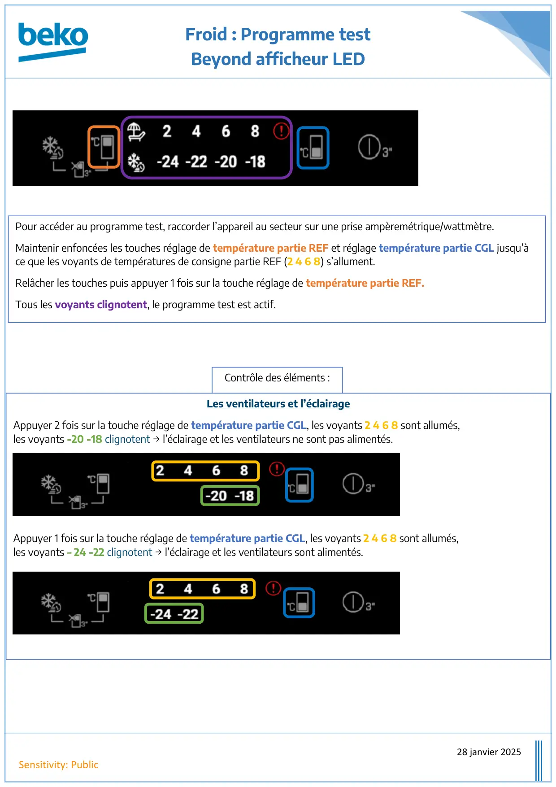
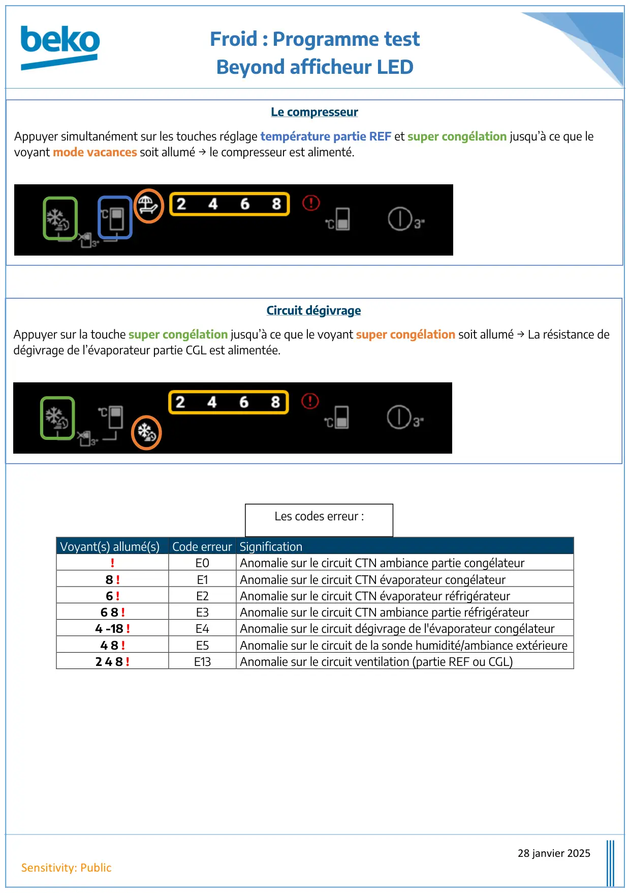

Prog Test Froid Beyond BTT

Froid : Programme testBeyond afficheur LED28 janvier 2025Sensitivity: PublicContrôle des éléments :Les ventilateurs et l’éclairageAppuyer 2 fois sur la touche réglage de température partie CGL, les voyants 2 4 6 8 sont allumés,les voyants -20 -18 clignotent → l’éclairage et les ventilateurs ne sont pas alimentés.Appuyer 1 fois sur la touche réglage de température partie CGL, les voyants 2 4 6 8 sont allumés,les voyants – 24 -22 clignotent → l’éclairage et les ventilateurs sont alimentés.Pour accéder au programme test, raccorder l’appareil au secteur sur une prise ampèremétrique/wattmètre.Maintenir enfoncées les touches réglage de température partie REF et réglage température partie CGL jusqu’àce que les voyants de températures de consigne partie REF (2 4 6 8) s’allument.Relâcher les touches puis appuyer 1 fois sur la touche réglage de température partie REF.Tous les voyants clignotent, le programme test est actif.
1 / 2
Froid : Programme testBeyond afficheur LED28 janvier 2025Sensitivity: PublicVoyant(s) allumé(s)Code erreur Signification!E0Anomalie sur le circuit CTN ambiance partie congélateur8 !E1Anomalie sur le circuit CTN évaporateur congélateur6 !E2Anomalie sur le circuit CTN évaporateur réfrigérateur6 8 !E3Anomalie sur le circuit CTN ambiance partie réfrigérateur4 -18 !E4Anomalie sur le circuit dégivrage de l'évaporateur congélateur4 8 !E5Anomalie sur le circuit de la sonde humidité/ambiance extérieure2 4 8 !E13Anomalie sur le circuit ventilation (partie REF ou CGL)Les codes erreur :Le compresseurAppuyer simultanément sur les touches réglage température partie REF et super congélation jusqu’à ce que levoyant mode vacances soit allumé → le compresseur est alimenté.Circuit dégivrageAppuyer sur la touche super congélation jusqu’à ce que le voyant super congélation soit allumé → La résistance dedégivrage de l’évaporateur partie CGL est alimentée.
2 / 2